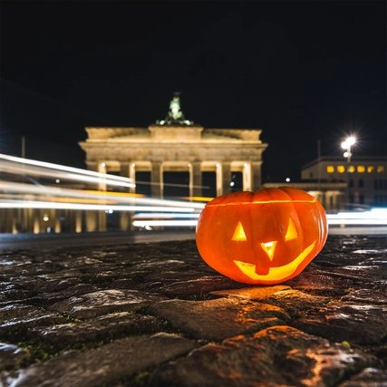
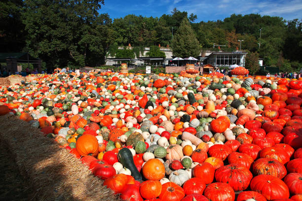

During Halloween in Germany, their traditions aren’t really that different from ours. They still do trick or treating, and they still dress up in costumes, but they do some other fun things that are not as common in the United States.
In Germany, Halloween isn’t typically as celebrated as it is here in the US. In Germany, the sentiment of the holiday is that it’s just another way to practice consumerism. While it’s not shared by most people, it still is something that is not very unusual to encounter.
Another thing about Halloween for them is that it is surrounded by a lot of other holidays for them. Halloween day itself, the 31st, is “Reformation Day.” In 1517, a man named Martin Luther (no correlation to MLK), nailed his Ninety-Five Theses to the door of the church in Wittenburg, which led to the Protestant Reformation. Due to this, some people do not celebrate Halloween. The day after Halloween is a holiday as well, it is All Saints Day. For them, it’s a day to honor all the Saints of the church.
But one thing that they do a little differently is that having Halloween parties are a lot more common. A lot of parents will throw a small party, have a spooky themed dinner, and just party instead of going out for trick or treating. In all the tabloids and magazines during Halloween time, you’ll be sure to find lots of advice on a fun way to throw a party.
In Germany, there are a lot of fun traditions around the city, some even put on by the city themselves! Some fun things over the country are..
All in all, Germany doesn’t really have many differences from Halloween in the United States, but it does have a lot of fun things to do around the city, and do have a few differences in unique traditions!
 